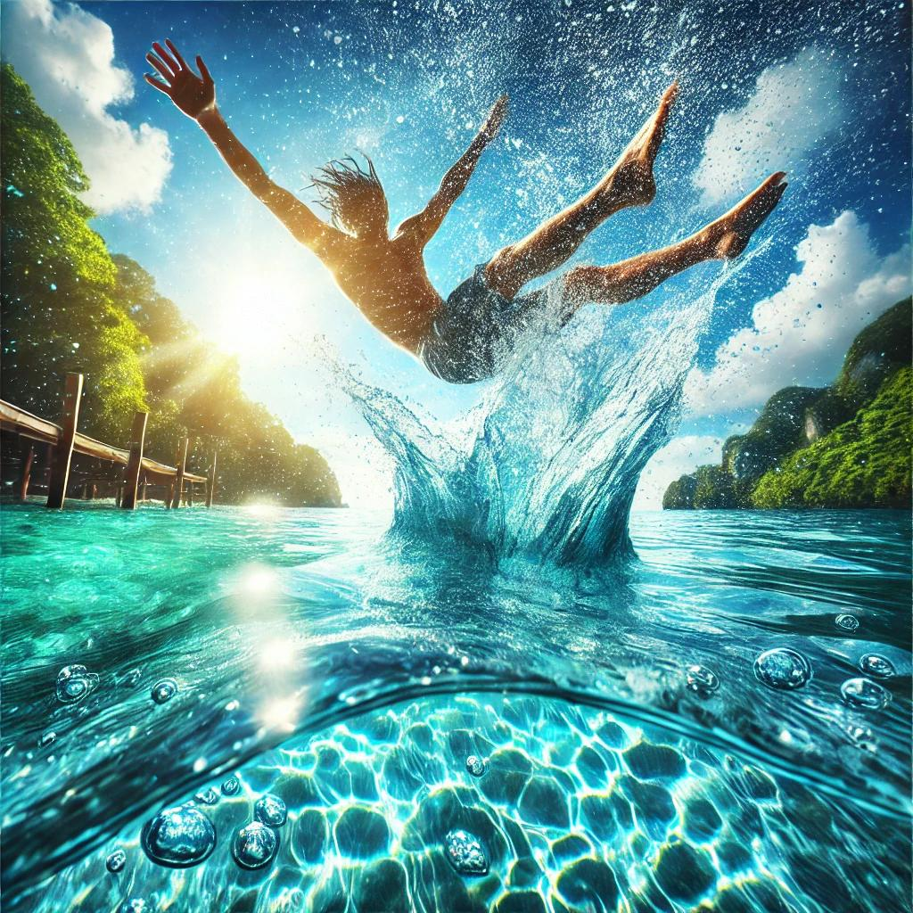

Thalasson was born from the belief that hydration should be more than just a necessity—it should be an experience. With each bottle, we aim to deliver the essence of purity, freshness, and quality. Our journey started with a simple idea: to make water that supports your wellness and uplifts your spirit. At Thalasson, we believe that everything starts with proper hydration. From the first sip to the last drop, our water is designed to support your health, wellness, and active lifestyle. Hydration is the foundation of everything we do, and it’s our mission to make it easy, enjoyable, and effective for everyone.
